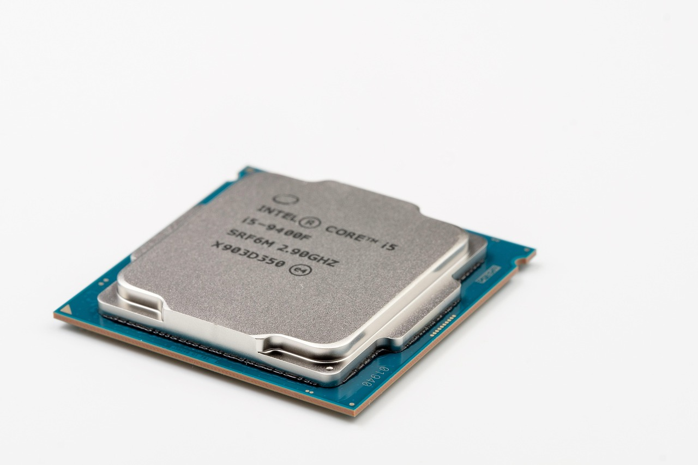

삼성 미스트랄 투자, 엔비디아 외 AI칩 생태계 구축 포석

삼성전자는 2026년 9월 미스트랄AI 시리즈C 라운드에 참여하며 전략적 투자자로 이름을 올렸다. 미스트랄AI의 기업가치는 이번 라운드에서 60억 달러로 책정됐고, 누적 투자 유치액은 약 11억 유로다.
미스트랄AI의 대표 모델 '미스트랄 라지 2'는 오픈소스 기반으로 파라미터 규모 약 1,230억 개이며, 엣지 최적화 버전 '미스트랄 7B'는 고성능 스마트폰·태블릿 탑재를 목표로 한다. 삼성은 갤럭시 AI 기능에 이 모델을 엑시노스 2500 NPU와 결합하는 협력을 추진 중이다.
삼성전자의 이번 투자는 한-프랑스 정상회담(2026년 9월)에서 양국이 AI 반도체·SMR 협력을 공식화한 직후 나왔다. 프랑스 정부는 미스트랄AI를 자국 AI 전략의 핵심 자산으로 보호 육성 중이며, EU 내 데이터 주권 규정 준수 모델로 포지셔닝하고 있다.
경쟁 구도에서 메타의 라마4(오픈소스, 4,000억 파라미터급)와 구글 제미나이 나노가 같은 온디바이스 시장을 공략 중이다. 삼성이 미스트랄 투자만으로 엔비디아 생태계를 대체하기 어렵고, 퀄컴 스냅드래곤에 탑재된 구글·메타 모델과의 점유율 경쟁에서도 엑시노스 NPU 성능(현재 갤럭시 S26 탑재 추정 40 TOPS)이 관건이다.
삼성의 미스트랄 투자는 단순 재무 베팅이 아니라 '칩-소프트웨어 통합' 생태계를 직접 구성하려는 시도다. 엔비디아가 CUDA 생태계로 AI 가속기 시장을 잠근 방식처럼, 삼성은 엑시노스+미스트랄 조합으로 온디바이스 AI 잠금 효과를 노리고 있다.
EU 시장에서 데이터 주권 규정(GDPR 강화)이 클라우드 AI 사용을 제한하는 방향으로 강화될 경우, 온디바이스 AI 수요가 구조적으로 확대된다. 삼성이 유럽 법인 스마트폰·PC 시장에서 미스트랄 탑재 제품을 차별화 요소로 활용하면 2027년 유럽 점유율 방어에 실질 도움이 된다.
미스트랄AI: 삼성 투자 유치로 아시아 OEM 시장 진입 경로를 확보했다. 삼성 갤럭시 연간 출하량 약 2억 5,000만 대에 탑재될 경우 즉각적인 모델 사용량 확대가 가능하다.
한국 온디바이스 AI 소부장: 엣지 AI 추론에 최적화된 저전력 DRAM(LPDDR6)·NPU용 패키징 소재 수요가 증가한다. 삼성전자 DS부문의 LPDDR6 양산 일정(2027년 예정)과 맞물려 관련 소재사 수혜가 예상된다.
퀄컴: 스냅드래곤 탑재 안드로이드 생태계에서 삼성이 엑시노스 비중을 높일 경우 갤럭시 플래그십 물량 일부가 이탈한다. 퀄컴의 삼성향 AP 매출은 2026년 기준 전체의 약 12%로 추산된다.
국내 AI 스타트업: 삼성이 해외 AI 모델(미스트랄)에 전략 투자하면서 국내 LLM 스타트업에 대한 삼성의 생태계 지원 우선순위가 낮아질 가능성이 있다. 네이버 하이퍼클로바X 등 국산 모델과의 협력 논의가 상대적으로 후순위로 밀릴 수 있다.
삼성전자 협력사·소부장 투자자는 엑시노스 NPU 성능 로드맵(40→80 TOPS)을 추적해야 한다. NPU 성능 도약 시 필요한 고대역폭 저전력 메모리와 패키징 소재 발주가 12~18개월 전 선행된다.
국내 AI 스타트업은 삼성의 미스트랄 투자를 위협보다 레퍼런스로 읽어야 한다. 미스트랄이 EU 데이터 주권 시장에서 유효하다면, 한국어 특화·K-컴플라이언스 강점을 가진 국산 모델의 국내 B2B 시장 방어 논리가 오히려 강화된다.
실제 조달 현장에서는 — 삼성 협력사로서 엣지 AI 디바이스용 소재를 공급할 경우, 이제 단순 스펙 충족을 넘어 '해당 소재가 엑시노스 NPU 열 설계(TDP 5W 이하) 요건을 충족하는지'에 대한 공동 검증 요구가 들어오기 시작했다. 열 관리 소재(TIM, 저열저항 인터페이스)와 저유전 패키징 재료 공급사는 지금 삼성 DS 패키징 팀과 공동 TDP 시뮬레이션 체계를 구축해야 시장 진입 기회를 선점할 수 있다.
이 포스팅은 쿠팡 파트너스 활동의 일환으로 수수료를 제공받습니다.